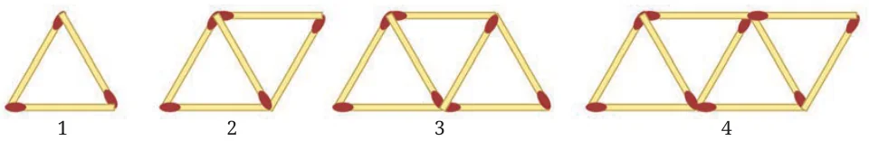
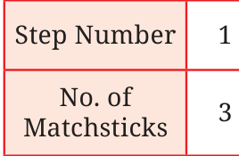
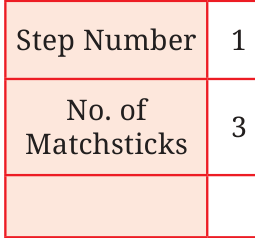
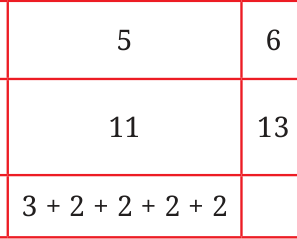
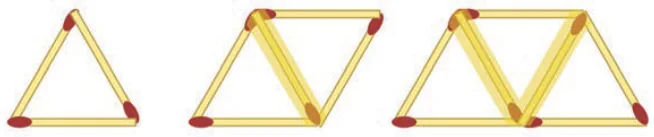

Look at the picture below. It is a pattern using matchsticks. Can you identify what the pattern is?

We can see that Step 1 has 1 triangle, Step 2 has 2 triangles, Step 3 has 3 triangles, and so on. Can you tell how many matchsticks there will be in the next step, Step 5? It is 11. You can also draw this and see.
How many matchsticks will there be in Step 33, Step 84, and Step 108? Of course, we can draw and count, but is there a quicker way to find the answers using the pattern present here? What is the general rule to find the number of matchsticks in the next step? We can see that at each step 2 matchsticks are placed to get the next one, i.e., the number of matchsticks increases by 2 every time.

Think of a way to use this to find out the number of matchsticks in Step 33 (without continuing to write the numbers). As each time 2 matchsticks are being added, finding out how many 2s will be added in Step 33 will help. Look at the table below and try to find out.


\(3 + 2 3 + 2 + 2 3 + 2 + 2 + 2\)
The number of matchsticks needed to make 33 triangles (Step 33) is _________. Similarly, find the number of matchsticks needed for Step 84
What could be an expression describing the rule/formula to find out the number of matchsticks at any step? The pattern is such that in Step 10, nine 2s and an added \(3 (3 + 2 \times\)
- 9)gives the number of matchsticks; in Step 11, ten 2s and an added
\(3 (3 + 2 \times 10)\) gives the number of matchsticks. For step y, what is the expression? It is: one less than y (i.e. \(y - 1) 2s\) and a 3. Therefore, the expression is
\(3 + 2 \times\) (y \(- 1)\).
This expression gives the number of matchsticks in Step y. Now we can find the number of matchsticks at any step quickly. You might have already noticed that there is a 2 in the first step also, \(3 = 1 + 2\). Using this, the expression we get is
\(2y + 1\).
Does the above expression also give the number of matchsticks at each step correctly? Are these expressions the same? We can check by simplifying the expression \(3 + 2 \times\) (y \(- 1)\).
\(3 + 2 \times\) (y \(- 1) = 3 + 2y - 2\)
\(= 2y + 1\).
Both expressions are the same. There is a different way to count, or see the pattern. Let us take a look at the picture again.

Matchsticks are placed in two orientations - (a) horizontal ones at the top and bottom, and (b) the ones placed diagonally in the middle. For example, in step 2 there are 2 matchsticks placed horizontally and 3 matchsticks placed diagonally.
What are these numbers in Step 3 and Step 4?
How does the number of matchsticks change in each orientation as the steps increase? Write an expression for the number of matchsticks at Step ‘y’ in each orientation. Do the two expressions add up to \(2y + 1\)?